At a house party a man steps to the bar mic, asks the DJ to turn him up, tells eleven years of love in pictures on the wall, and ends with his chin raised and the volume up.
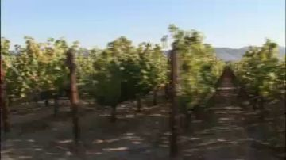
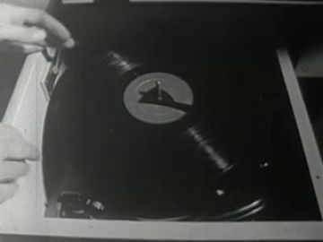
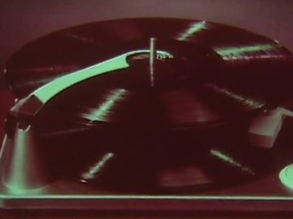
The poem
The poem is a spoken-word set about the right to be heard after a long love ends. It opens with the voice held down: eyes wide shut, chin nested at the arch of the weight of his own words. The love story comes as ghosts walking off through sun-soaked evergreen fields (the page says vineyards, unnourished), treasures that escape one by one, and stars that dim.
It turns on L05: 'I've walked a thousand light years across the greatest divide to be heard. So DJ please turn me up.' After that plea the losses read as testimony: wedding bands diverging across abstract skies, a shared home boxed and trucked down one-way streets with no U-turns, eleven years plucked off like daisy petals (we love, we not), and three roads to choose from: heavy rain, frontal fog, or dim night lights under a cloud with a silver lining. The litany 'one night / one tear / one call to a friend / one open mic at a time' brings him back to the first image reversed: chin now nested high, volume turned up.
Look
Two light worlds: the party in magenta and violet with teal haze, and the memory images on the wall in washed daylight gold and grey. Make the room from layered corrugated card: a dark-stained card bar with a cut gel strip for neon underglow, a painted brick card for the projection wall with a real rectangular hole where the archive plays, and a black ceiling card pricked with pinholes and lit from behind so the stars can go out one by one. Haze is torn tracing paper slid sideways; the strobe is exposure flicker, not drawn.
Our best elements
The strongest things we already have for this poem: generated footage, Atlantis views, found film and painted kit sheets.
07.2b ghosts walking down the rows, playing in the projection wall
Sunlit rows running straight away from the lens, bright enough to read through the haze; translucent POET and EX backs walk straight down it
07.5 the daisy filling the wall while POET plucks the card daisy
Full-frame white petals and yellow centre; it matches the prop card one to one
07.1b scratch insert, cut on the DJ's flat_push hand
A hand on a spinning record, from a film whose title is the poem's question
07.5 'we love we not' scratch beat; colour source for the vinyl card
Oxblood and green, bright, already motion-smeared like a scratch
07.6a third road panel: dim lights under a cloud with a silver lining
A dark cloud with a lit rim; the image the line names
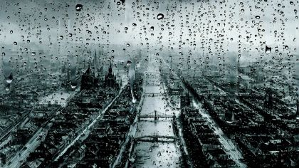
07.6a first road panel: heavy rain
Figure-free, high contrast, roads converge to a vanishing point; it reads as a road choice
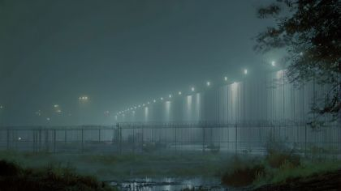
07.6a second road panel: frontal fog
Figure-free; a row of lamps going into fog is the fog front
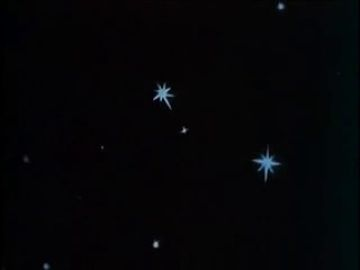
07.3a ceiling stars that dim as he walks
Painted stars on black: they match the pinhole ceiling and can be cut out one at a time
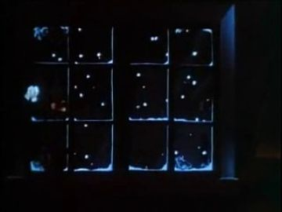
Projection wall alternative: the wall is a window grid, and each pane carries one memory
Vertical panes, the strongest surface for an archive opening

Lighting and shape reference for the projection wall; crop the screen as a light source
A bright vertical pane in Naraka neon. It has a small robed figure: crop it or cover it with the bar card

07.3a back plate for his walk through the crowd to the mic stand
Figure-free, deep perspective lined with glass panes in magenta and cyan; it reads as the length of the room
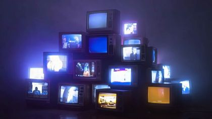
Alternative projection wall: stacked TVs on the DJ landing, each playing one memory
No people, many small bright screens; rings in one, trucks in another

07.5a/c petals landing on the bar; the motion reference for the paper petals
Petals pile on a dark counter, exactly the beat; crop to the counter for the cut-out
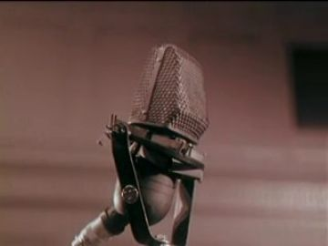
Reference for the mic card, and an end-beat insert when the volume goes up
A single iconic mic, flat-lit; it reads instantly
What we need
- A figure-free house-party plate: bar counter left, DJ booth on a raised landing right, projection wall between, star ceiling. Every generated candidate is a bedroom with a seated silhouette (c7b5fe95c4, 7efe341a86) or an outdoor court
- Archive of a house or furniture being boxed and two moving vans pulling apart (search: moving day, moving van, Allied/Mayflower industrial films); nothing in the found set
- Wedding bands: no match. Draw two gold ring cards on a black field and slide them apart in code
- One-way street, NO U-TURN and STOP sign cards (the poem's 'not built with u-turns or stop / maybe we shouldn't signs')
- POET chin-down and chin-high head cards, and a sunglasses card that reads 'eyes shut' (lenses tilted down, brows knit)
- The DJ, the guests and the EX ghost all exist only as blank layouts; nothing is painted
- VU meter card with a hinged needle, and a fader card that slides
- Sound: needle-drop, scratch and crowd-cheer stems to cut the plea on
Characters
POET kit →
The speaker at the bar mic: he begins pressed down by his story and ends lifted by it
Costume. Black track jacket with red piping from the shoulders down the chest, black track trousers, black Chelsea boots; black sunglasses as their own plug-in card. Paint a neon magenta rim down one side and a cyan wall-spill on the other
Expressions. calm (waiting at the bar), strain (chin nested down, mouth tight), sad (lips parted, head tilted), recognition (head up to the booth), joy (chin high, slight smile)
Hands. grip(microphone), grip(mic_stand), open (palm up, empty), flat_push (pushing the rings apart), grip(daisy), pinch (a petal), point (at each road)
Cards to paint. head: chin-down front; head: chin-high front; head: profile (to the booth); sunglasses: level / tilted-down 'eyes shut'; hand: grip mic (R); hand: grip mic stand (L); hand: pinch petal; hand: point; hand: open palm up; body: threequarter walk and back stand (before the wall)
poet.07.action has only one 'stand · front' frame plus seven empty hand cells. It is missing the walk (07.3a profile), the back stand before the wall (07.6a) and any head-angle cards, so it cannot do chin-down to chin-high, the poem's main movement. The costume notes are right: red piping, Chelsea boots, sunglasses as a separate card
Its action sheet for this poem is on Character Kits v2.
open the action sheet →| action | beats | how the card does it |
|---|---|---|
| chin nested | head level -> chin drops onto the mic on 'weight' -> holds low through 'spoken words' -> small dip on each beat | Neck brad; swap to the chin-down head card (about 20 degrees, crown forward). The mic hand rises under the chin at the elbow brad. The body card sinks 1 cm on each beat |
| mic held out (passage) | pull the mic in -> extend the arm to full length toward the booth -> hold through 'to be heard' -> bring it back on 'turn me up' | Shoulder and elbow brads lock straight; the grip(microphone) hand card stays. The head is the profile card facing the booth |
| eleven petals | daisy raised to the mic -> pinch, pull, drop, eleven times on the syllables -> bare stem falls -> palm stays open | Daisy card with 11 petals on tabs that come off one by one; the pinch hand travels on a wrist brad; at the end swap to the open-palm hand card |
| chin high | turn to the room -> head lifts past level on 'chin now nested high' -> free arm opens -> hold for the drop | Chin-high head card; the free arm swings out on the shoulder brad to the open hand; a light/shadow split comes from a half-card mask |
DJ kit →
The DJ the plea is aimed at. They answer by pushing the fader: the turn of the poem made physical
Costume. Bomber jacket with LED piping (paint the piping as a bright cyan line, cut through so light shows behind), cap, over-ear headphones round the neck. Give them a face and build clearly different from POET's; the style strip on the pack shows POET-like heads, which risks a double
Expressions. joy (scratching), listening (one cup lifted), nod (head card dips one step)
Hands. flat_push(vinyl_record), pinch(dj_controller fader), grip(dj_controller), grip(headphones), fist (pumping)
Cards to paint. body: crouch front; body: stand threequarter; head: front joy, threequarter listening; hand: flat_push on record; hand: pinch fader; hand: lift headphone cup
party.07.action has the right six poses (crouch front, dance threequarter_back, two leans, dance back, dance front) and eight hand cells, but nothing is painted, and the DJ shares the sheet with the guests, so DJ and guest sizing are mixed
No action sheet exists for this poem yet.
| action | beats | how the card does it |
|---|---|---|
| drop in and scratch | drop from the landing -> crouch behind the decks -> scratch back and forth -> hold the pose for the cheer | The crouch is a replacement body; the R hand flat_push card rocks on the wrist brad over a rotating record card |
| push the volume | eyes on POET -> nod -> thumb pushes the fader up its slot -> VU needle swings into the red | Fader knob card in a cut slot in the controller card; the needle on a brad, driven in code |
GUESTS kit →
The audience: they cheer, lean in, mouth 'we love, we not', hold up lighters and phones. Their reactions are the room hearing him
Costume. party_guest variants: night-out shirts and dresses in solid flat colours (one mustard, one teal, one white) so they separate from the magenta wash
Expressions. joy, listening, sad, surprised
Hands. wave, fist, open (hand on chest), grip(drink_cup), grip(lighter), grip(phone)
Cards to paint. 3 guest bodies (back, threequarter_back, front lean); heads: joy / sad / listening; lighter + flame card; phone with lit-screen card
The poses and hand cells on party.07.action match the treatment; the guests have no colour or costume variation specified yet
No action sheet exists for this poem yet.
| action | beats | how the card does it |
|---|---|---|
| lean in | sit back -> lean forward at the hip -> hand to chest -> hold | Hip brad rotates the torso 15 degrees; the hand card swaps to open-on-chest |
| lighters up | arm rises -> flame card appears -> sway | Shoulder brad; the flame is a separate gel card with a code flicker |
EX kit →
The other half of the love story, seen only as a ghost walking away down the vine rows inside the projection
Costume. Dark olive bomber jacket with ribbed hem, dark jeans, white low sneakers; back of the head only (short dark hair, nape)
Expressions. unseen
Hands. relaxed
Cards to paint. body: back walk (two leg positions); head: back of head
ex.07.action wrongly labels its only frame 'stand · front'. He must never face camera; relabel it back/walk. The head reference (back of head, nape, brass brad) is right
Its action sheet for this poem is on Character Kits v2.
open the action sheet →| action | beats | how the card does it |
|---|---|---|
| ghost walk away | beside POET's ghost -> walks into the rows -> shrinks -> fades out | Back-view walk cycle of two leg cards on hip brads, printed at 50% opacity (or tracing-paper print) and scaled down in code as they recede |
Props
Sorted by priority. Each has its design, how to build it, the references found in the archive and our footage, and a prompt for its card sheet.
home bar, dark wood, neon underglow, bottles behind
Card 220 cm long, oxblood-brown wood grain in ink, a cut slit under the lip backed with magenta gel; bottle shelf on a separate card behind; states: unlit, underglow on
References found
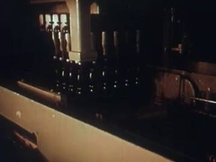
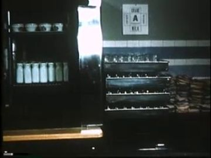
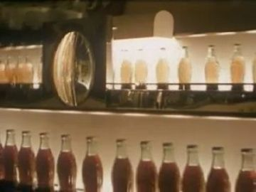


Generation prompt
Prop card sheet: a home bar counter in dark stained wood with a row of bottles on a shelf behind it, flat corrugated-cardboard card, gouache + confident ink line, a thin magenta neon strip under the counter lip, raw kraft cut edge, flat-on even light, plain background; separate cards: 1) counter front, 2) bottle shelf, 3) neon strip
white daisy with exactly eleven petals
Stem card 30 cm, a yellow-centre disc with 11 petal tabs that each come off; states: whole, petals going (11 to 0), bare stem
References found
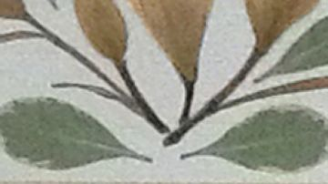

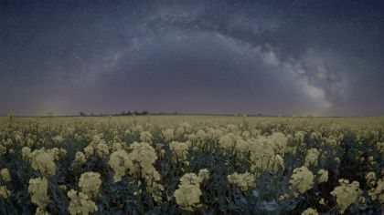

Generation prompt
Prop card sheet: a white daisy with exactly eleven petals, flat corrugated-cardboard card, gouache + confident ink line, yellow centre disc, raw kraft cut edge, flat-on even light, plain background; separate cards: 1) stem with centre and no petals, 2) eleven single loose petals, 3) whole daisy assembled
two-deck controller with crossfader, faders, VU meter
Layered card 60 cm wide; two record platters on brads, a cut slot for the volume fader, a VU meter window with a needle on a brass brad; states: idle, fader low, fader max / needle in the red
References found
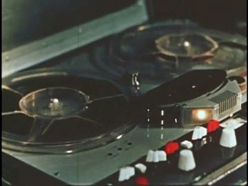
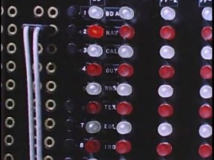
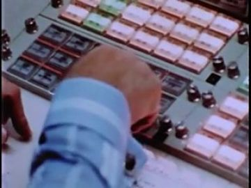
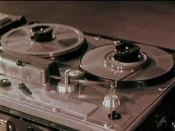
Generation prompt
Prop card sheet: a two-deck DJ controller seen from the front-top, flat corrugated-cardboard card, gouache + confident ink line, glowing magenta and cyan pads painted flat, raw kraft cut edge, brass brads at the platter centres and the VU needle pivot, flat-on even light, plain background; separate cards: 1) controller body with an empty fader slot, 2) fader knob, 3) VU meter face, 4) VU needle, 5) record platter
black handheld vocal mic, the poem's object
Corrugated card 19 cm, matte black gouache with a silver mesh head drawn in ink cross-hatch; states: held, held-out (same card), blooming (gel halo card behind the head)
References found
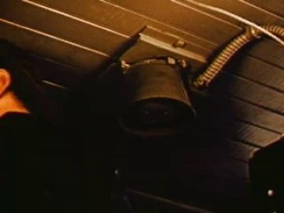
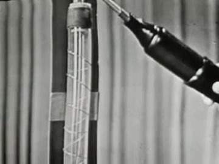
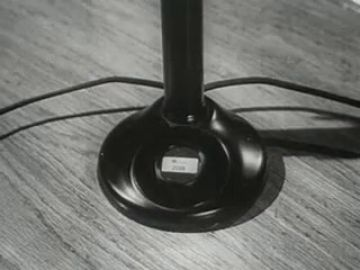
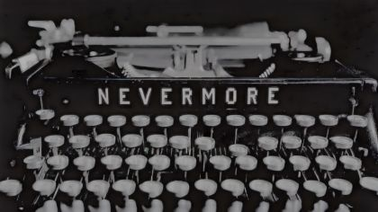
Generation prompt
Prop card sheet: a black handheld vocal microphone, flat corrugated-cardboard card, gouache + confident ink line, silver mesh head cross-hatched, raw kraft cut edge, flat-on even light, plain background; separate cards: 1) microphone, 2) microphone with a soft magenta glow halo card behind the head
painted brick wall behind the bar where the poem's images play
Card 400 cm scale, gouache brick with a cut rectangular window (16:9) where the archive or generated clip composites; states: dark, lit (cyan spill card on the floor), split in three (two thin card mullions drop in)
References found
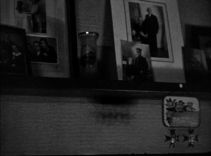
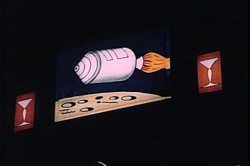
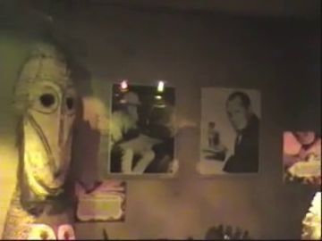
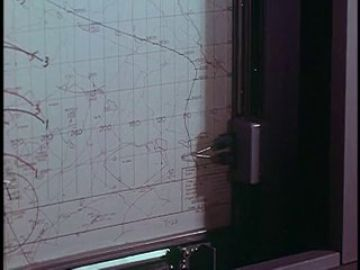
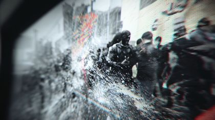
Generation prompt
Prop card sheet: a painted brick party wall with a large blank rectangular projection screen cut into it, flat corrugated-cardboard card, gouache + confident ink line, magenta neon strip along the top edge, raw kraft cut edge, flat-on even light, plain background; separate cards: 1) wall with an empty screen opening, 2) two vertical mullion strips that split the screen into three, 3) cyan light-spill shape for the floor
black 12-inch record
Card disc 30 cm, black with lighter grooves dry-brushed, oxblood label; states: spinning (rotates on a brad), scratched (rocked +/-20 degrees)
References found
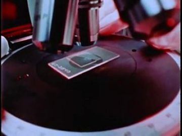
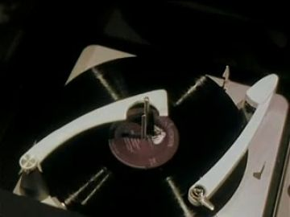

Generation prompt
Prop card sheet: a black 12-inch vinyl record, flat corrugated-cardboard disc, gouache + confident ink line, dry-brushed groove rings, oxblood paper label, brass brad at the spindle, raw kraft cut edge, flat-on even light, plain background; separate cards: 1) record, 2) tonearm
chrome straight stand on round base
Card 160 cm, grey gouache with white ink highlights, clip at top; states: empty, with the mic in the clip
References found
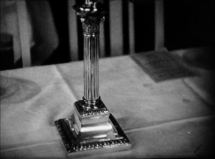
Generation prompt
Prop card sheet: a chrome straight microphone stand on a round base, flat corrugated-cardboard card, gouache + confident ink line, white ink highlights, raw kraft cut edge, flat-on even light, plain background; separate cards: 1) stand empty, 2) stand with a black mic in the clip
two box trucks carrying a boxed house
Side-view card trucks 30 cm, kraft-coloured boxes stacked in the open backs; states: loaded, driving (wheels on brads)
Generation prompt
Prop card sheet: two small box moving trucks in side view, flat corrugated-cardboard card, gouache + confident ink line, kraft cardboard boxes stacked in the open backs, brass brads at the wheel hubs, raw kraft cut edge, flat-on even light, plain background; separate cards: 1) truck A, 2) truck B, 3) a small house folding into a box
ONE WAY arrows, NO U-TURN, STOP, a blank 'maybe we shouldn't' sign
Card signs 20-40 cm on stick posts; states: upright, the NO U-TURN sign spinning on its brad
Generation prompt
Prop card sheet: street signs, flat corrugated-cardboard cards, gouache + confident ink line, raw kraft cut edge, brass brad where each sign meets its post, flat-on even light, plain background; separate cards: 1) ONE WAY arrow sign, 2) NO U-TURN sign, 3) STOP sign, 4) a blank white sign, 5) a sign post
two plain gold rings, seen huge on the wall
Two card rings 2 cm (shot as an enlarged insert), gold gouache with an ink highlight arc; states: interlocked, sliding apart (code-driven on a diagonal)
Generation prompt
Prop card sheet: two plain gold wedding bands, flat corrugated-cardboard rings, gouache + confident ink line, single white highlight arc, raw kraft cut edge, flat-on even light, plain black background; separate cards: 1) ring A, 2) ring B, 3) the two rings interlocked
guest hand props
Small cards 8-15 cm; lighter with a separate gel flame, phone with a lit-screen card, clear cup
Generation prompt
Prop card sheet: party hand props, flat corrugated-cardboard cards, gouache + confident ink line, raw kraft cut edge, flat-on even light, plain background; separate cards: 1) plastic lighter, 2) lighter flame, 3) smartphone dark, 4) smartphone screen lit, 5) clear party cup with a drink, 6) over-ear DJ headphones
Places
house_party
The Atlantis house from the end of 06, now packed: a living room in Naraka magenta and teal haze, the bar at left, the DJ on a raised landing at right, the projection wall between them, the pinhole star ceiling overhead. It should feel close and warm, a room listening
Where the archive opens: the projection wall's screen (vertical, large, bright: best); the window grid behind the booth (Snow Queen panes as the model); a stack of CRTs on the landing (gen_8c0e5df81f); the polished bar top (faint, only for very bright clips)
References: our footage, Atlantis views, found film


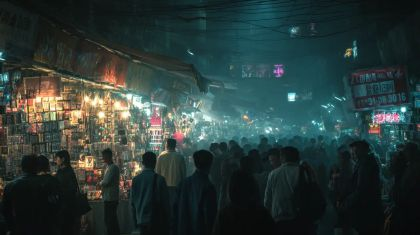

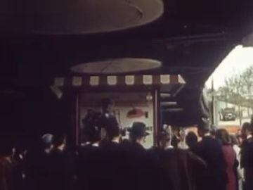
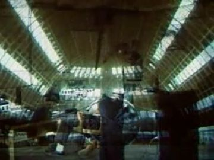
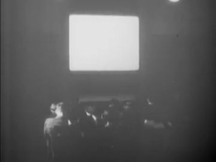
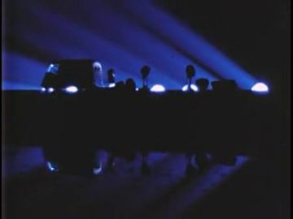
Generation prompt
Wide interior plate, no people: a cyberpunk living-room house party set in Atlantis, dark wood bar counter at left with a magenta neon underglow, a raised DJ landing at right with an empty booth, a large blank projection screen on a painted brick wall between them, a black ceiling with small LED stars, teal haze, magenta and cyan neon strips, photo-real, 16:9, eye level, empty floor in the foreground for puppets
projection_triptych
The wall split into three roads (07.6a): rain, fog, dim lights with a silver lining. POET stands in back view before it, as before a crossroads
Where the archive opens: three vertical panes of the split wall
References: our footage, Atlantis views, found film
Generation prompt
No new plate needed; composite the three found clips into the projection_wall card's three panes
Effects
| effect | how, in this cut-out world |
|---|---|
| level_meter_rising | VU needle card on a brass brad, rotated in code; the red zone is a painted arc; on 'turn me up' the needle pins, and the mic's gel halo card fades in |
| ceiling_stars_dimming | Black ceiling card with pinholes, lit from behind; tape over one hole per beat as he walks (or mask each in code), timed to 'diminish their glares' |
| ghost_translucency | Print the POET and EX back cards on tracing paper (or composite at 45% in code) and composite them inside the projection screen over the vine-row clip, scaling down as they recede |
| falling_petals | Eleven loose paper petal cards dropped on string-free paths in code with a small flutter rotation, landing in a pile on the bar card |
| projection_glow | The screen clip is blurred and added onto a cyan floor-spill card and onto the faces turned toward it |
| neon_wash / party_haze | Gel-coloured light from two sides (magenta key, teal rim); haze as two torn tracing-paper strips drifting at different speeds |
| strobe_flicker | Exposure flicker on beat 1 of each bar only; never over the passage line |
| silver_lining / light_shadow_split | A half-card black mask over POET's left side for 07.7a; a thin silver paint line on the cloud card edge picks up the light |
The puppet passage
his line · 07_L05
“And I've walked a thousand light years across the greatest divide to be heard. So DJ please turn me”
the archive answers · TULSA OKLAHOMA, ca. 1945 - ca. 1955 (1945)
“so that all may be heard.”
an object held out · wall
Keep. L05 is the right fulcrum and the gesture is right: one held action, the mic held out at arm's length toward the booth, kept there through 'to be heard'. The Tulsa clip ('so that all may be heard') answers the meaning, not just the word.
Better. The plate P07-001 carries a generated DJ figure, which fights the puppet. Use a figure-free booth (the empty-booth plate prompt above) with our cut-out DJ, and open the archive in the projection wall's screen, a large vertical pane, rather than a small strip of wall above the DJ's head. End the hold on the DJ's thumb pushing the fader as 'turn me' lands, so the archive and the fader answer together. Use the profile head card toward the booth, not a rotated front head.
Other lines that could carry one:
- 07_L01 'eyes wide shut and my chin nested...': head lowers (chin-down card) onto the mic; the archive opens in the bar's back mirror/bottle shelf glass
- 07_L08-09 'eleven years each plucked off as daisy petals / we love we not': pinch and drop petals; the daisy close-up (arch_e31a6321) fills the projection screen
- 07_L09-10 'to pick a road of heavy rain or a frontal fog...': point held at the third pane; the three roads open in the split wall
- 07_L12 'Chin now nested high and volume turned up': head lifts (chin-high card), free hand opens; the archive opens in the projection wall
Scene ideas
- Vine-row ghosts: the Soil Explorers rows (arch_83ab12f7-191f) play in the projection wall; translucent POET and EX back cards walk into it and get smaller, while the real POET at the bar keeps his eyes shut
- The scratch that answers: cut the DJ's flat_push hand card onto the 1958 turntable (arch_c6019698-5fd4, 'Have I Told You Lately That I Love You?'); the film title is lettered on the record label card
- Stars go out one by one: the Snow Queen stars (arch_bfbcbfa6-1e8b) map onto the pinhole ceiling, and each hole is taped over on 'one by one treasures escaping'
- Three roads: the projection wall drops two card mullions; gen_dd0782d25a (rain), gen_9e81657f62 (fog), arch_32b8345d-4188 (Sunburst) fill the panes; POET's point hand holds on the third
- Petal pile: the gen_d4b2d5fdf0 counter shot under our bar card, with eleven paper petals landing in the pile as he counts; the Living Stereo turntable (arch_f71fab7d-c0ef) spins 'we love, we not' on the wall
- The walk to the mic: the Shrouded Arcade (view_007) as a deep back plate; guest cards slide aside in two layers as POET in profile crosses
- TV-stack wall: replace the projection wall with the CRT pyramid (gen_8c0e5df81f); rings slide apart across two neighbouring screens, and the trucks drive off from screen to screen
References to look for
| what | where to look |
|---|---|
| moving day / trucks splitting | archive: 'moving day', 'moving van', 'Allied Van Lines', 'household goods' industrial films 1950s-70s; home movies of loading a truck |
| wedding rings, vows | archive: 'wedding' home movies 1940s-60s, ring exchange close-ups; 'jewelry manufacture' industrials for gold rings on black |
| house-party light and the spoken-word mic | Def Poetry Jam staging, Nuyorican Poets Cafe photos, Roy DeCarava's jazz-club photographs (one hard light, deep black) |
| cut-out performer under light | Lotte Reiniger silhouettes for the ghosts; Kara Walker cut-paper scale; Romare Bearden collages of musicians (The Block, Jazz series) |
| projection inside the set | Laterna Magika (Prague) stage projection; William Kentridge drawn projection on paper (Felix in Exile) |
| DJ hands and scratch | archive: 'phonograph', 'record player' 1950s ads; documentary refs: Style Wars, Scratch (2001) for hand shapes |
Our footage for this poem
The 20 generated clips and 8 Atlantis views closest to the poem (CLIP, image against its treatment and lines).

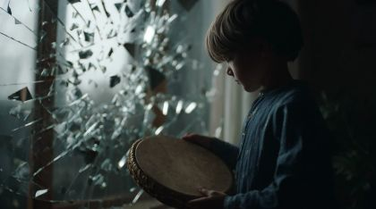


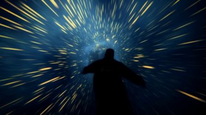
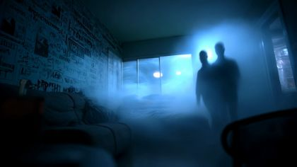
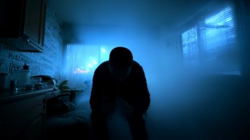
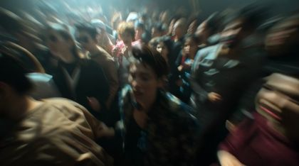


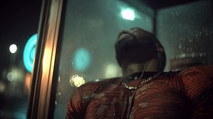

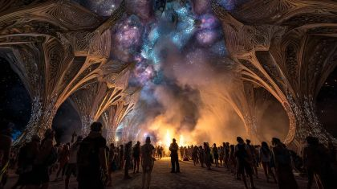

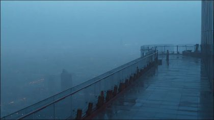
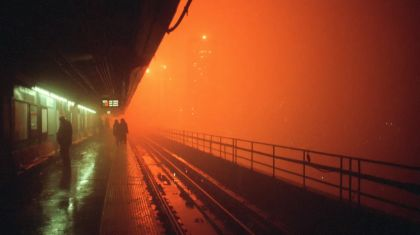
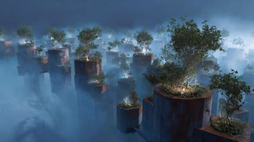
The kit
| status | kind | item | source |
|---|---|---|---|
| need | fx | Moving-truck and wedding archive | to find |
| need | head | POET chin-down / chin-high / profile head cards | to paint into poet.red_black_sunglasses.heads layout |
| need | head | Sunglasses card: level and tilted-down | to paint |
| need | prop | Microphone, mic stand, controller+fader+VU, vinyl, daisy | to generate (prompts above) |
| need | set | Bar counter, projection wall with cut screen, star ceiling | to generate + build |
| need | set | House-party plate, figure-free | to generate (prompt in sets) |
| need | sound | Scratch, needle drop, crowd cheer | to find / record |
| partial | body | POET red_black_sunglasses body front/threequarter/back/profile | existing pack poet.red_black_sunglasses.body.* (layouts, unpainted) |
| partial | body | DJ dj_cyber body crouch + stand, heads, hands | party.dj_cyber.* packs (layouts) |
| partial | body | Party guests x3 variants | party.party_guest.* packs (layouts) |
| partial | body | EX ghost back walk | ex.ex_jacket.body.back (layout); fix the ex.07 'front' label |
| partial | hand | POET hands: grip mic, grip stand, pinch, point, open palm, flat_push | poet.red_black_sunglasses.hands (layout) + poet.07.action cells |
| have | fx | Vine rows, daisy, Sunburst, turntables, Snow Queen stars | arch_83ab12f7-191f, arch_e31a6321-93a3, arch_32b8345d-4188, arch_c6019698-5fd4, arch_f71fab7d-c0ef, arch_bfbcbfa6-1e8b |
| have | fx | Rain and fog road panels | gen_dd0782d25a, gen_9e81657f62 |